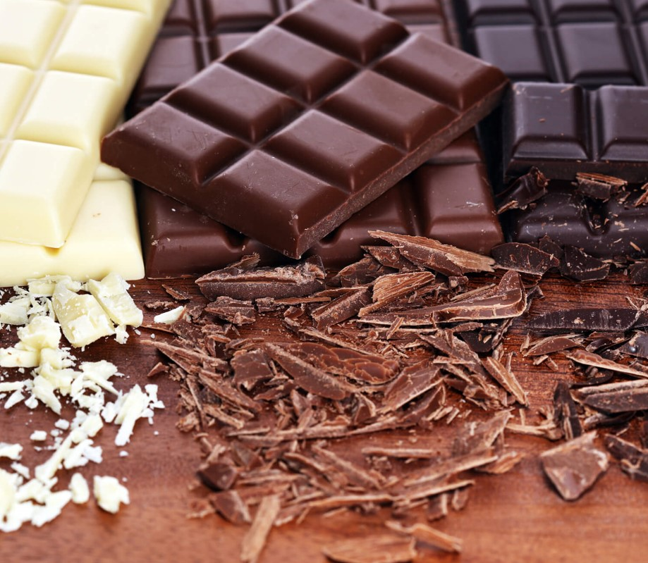

Le chocolat est-il aussi bon pour la santé que pour le palais ?
La fève de cacao, issue du cacaoyer (famille des Sterculiacées), existait déjà 4000 ans avant J.-C. dans certaines zones tropicales d’Amérique du Sud, notamment dans les bassins de l’Amazonie et de l’Orénoque. Cet arbre porte jusqu’à 500 fleurs par an, mais seules 1 à 2 % d’entre elles donneront le fruit : la cabosse. De la forme d’un ballon de rugby, elle renferme 30 à 50 graines baignant dans un mucilage et qui deviendront, après une préparation adéquate, les fameuses fèves de cacao. Il faut environ 20 kg de cabosses fraîches pour obtenir 1 kg de fèves séchées et un cacaoyer en produit environ 500 g à 2 kg par an.
Se motiver à faire du sport!
Entre bonnes résolutions sportives, rentrée, challenge personnel, trouver une bonne raison de se mettre au sport n'est pas compliqué. Mais une fois cette raison trouvée, faut-il encore se motiver réellement et ne pas retomber dans sa routine quotidienne où tout est plus tentant qu’aller courir sous la pluie. Et c'est une fois qu'on s'y est mis que le plus dur peut arriver : garder la motivation pour faire du sport... On vous comprend, alors on a décidé de vous aider avec ce dossier tout spécialement conçu pour vous aider à rester motivé·e.
Sports bien-être?
Vous recherchez la sérénité, le plaisir de bouger dans un corps détendu et fort ? Découvrez nos conseils pour vous initier à la marche et au jogging pour un nouveau souffle. Et nos conseils pour vous lancer dans la pratique du yoga et du Pilates pour vous recentrer et prendre conscience de l'ensemble de votre corps. Des sports bien être où le corps retrouve toute sa souplesse et l'esprit toute sa vivacité !